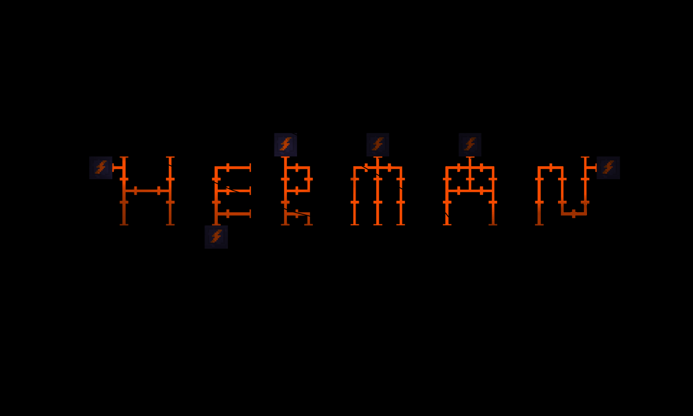
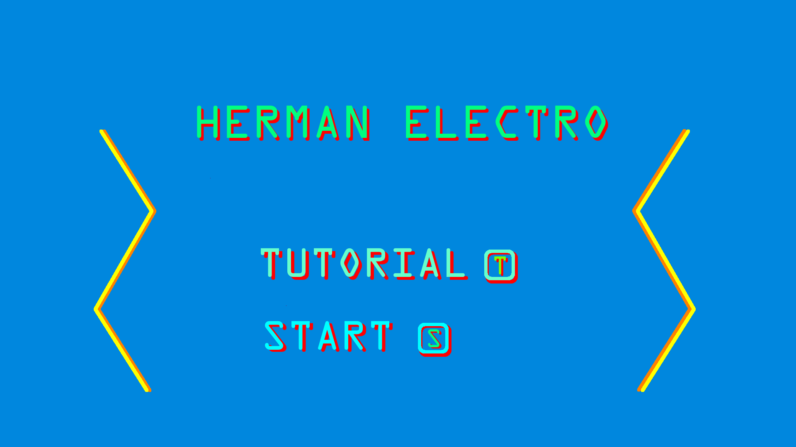
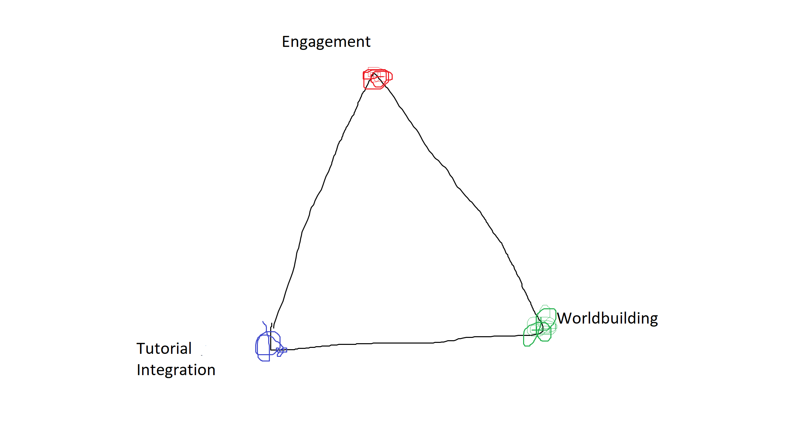
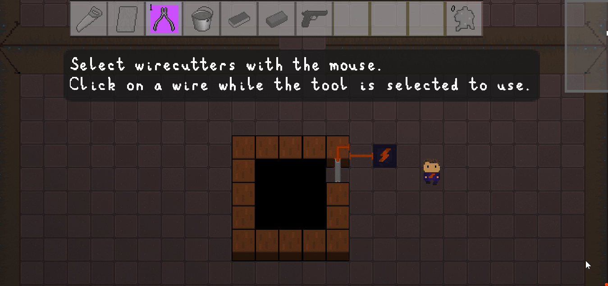

Just a few seconds after meeting someone, people have already formed an opinion.
On a first date, you can predict how the night will end from the initial greetings. When you meet a neighbor for the first time, you can tell by the end of your handshake whether you’ll be making a new friend or just someone you wave at as you pull out of your driveway. Humans are opinionated creatures, and we also don’t like it when our opinions are challenged.
That’s why it’s so important that someone’s first impression -- of you, or of whatever you want to sell to them -- is positive.
Of course, opinions do change, and exposing someone to a person or product repeatedly can shift their opinion over time. If you’re trying to befriend your neighbor, this might work. If you’re trying to convince someone to play your video game so they will recommend it to their friends, you’re out of luck; the player can always move on to another of the 100 games in their backlog, never to touch your game again.
The most obvious conclusion is that the beginning of your game is crucial - the tutorial, or the first level. But I’d argue that equally important is what comes even before those: the start menu.
The Herman Electro Start Menu
The first thing you see when you open Herman Electro is this:
Followed up by this:

No text, no start menu, and no list of options. Players can select their character and gamemode using WASD controls, just as they would move normally.
The game originally had a more traditional start menu. It took many iterations of our opening menu before we finally reached the result you see above. But Herman Electro isn’t the first game to use a more interactive menu.
The Interactive Start Menu
The start menu is just about as old as video games themselves -- and for good reason. On an arcade machine, you have to pay to play and confirm you’re ready to go. In this case, having some sort of opening menu before gameplay is essentially mandatory.
Plenty of other games are hard to design without a start menu. It would be a jarring experience to immediately enter a multiplayer combat arena with no start menu, and it’s also sometimes helpful to have settings options available from the start.
We actually began development with a traditional start menu:
However, most games releasing now have plenty of alternatives to the start menu, and these alternatives are often more engaging than the bland list of text options that makes up most start menus.
That’s where the “interactive start menu” comes in.
One of my favorite game series is the Fancy Pants series. These iconic Flash platformers are famous for their smooth movement, cute art style, and well-designed environments. But when I think about Fancy Pants, the first thing that comes to mind is the start menu.
I remember being amazed when I played Fancy Pants for the first time. From the moment the game loaded, I was able to move around and walk into doors, with different doors leading to different in-game options. This opening scene was similar to a traditional start menu in behavior, but with two huge improvements.
First of all, the Fancy Pants opening scene was more engaging than a traditional menu. It felt like I was really in the game and jumping into the adventure through a doorway, rather than just controlling a cursor.
Secondly, the opening scene taught basic movement mechanics before the game even began. By the time I encountered actual platforming, I was somewhat familiar with the physics of the game and could jump right into the action.
Many other games have tried this interactive start menu option, with varying degrees of success. The idea is especially well-suited to platformers, but I could see it working well in all sorts of game genres. For example, I’d be interested in seeing a first-person shooter where the player walks into different doorways to enter the action, or an RTS with a hub world to start the game.
Games such as Fancy Pants inspired the design of the Herman Electro start menu, but we’ve also built upon their ideas.
The Hub World
You’ve already seen the opening room of Herman Electro. But a first-time player will actually see this:

The tutorial of the game is built into the hub world, which contains seven tutorial rooms, the main room, a room that displays unlocks, and some secret rooms I won’t spoil here.
To reach the main game, the player needs to beat the tutorial, although it is never explicitly stated that these rooms are actually a tutorial. This way, the early puzzles don’t feel like a waste of time; they are integrated into the overall gameplay instead of being awkwardly separated into a tutorial section.
Returning players will see the main room, where they can walk around to select a character and enter a staircase to choose the corresponding gamemode.
The Advantages of the Interactive Start Menu or Hub World
There are a few reasons why we chose to use a more interactive start menu concept instead of a traditional one.
Reason 1: A more interactive start menu format instantly engages the player. This instant engagement removes the awkward time between selecting a start menu option and actually playing the game. Instead, the player is “playing” from the moment the game begins, and moving around to select a gamemode is more fun than looking at a static menu.
While it's unlikely a player would put down the game from boredom after seeing a traditional start menu, every early gameplay moment counts. A start menu in which the player can move around is more engaging than a static menu, and that early engagement could lead to more excitement about the game in general.
Reason 2: The Herman Electro opening world allows for much cleaner tutorial integration. By including the tutorial in the opening map, players never feel like they are wasting their time learning the game mechanics.
Along with tutorial integration comes a second, more subtle learning benefit: players can get a sense of the game's motion and physics by practicing the game's controls before jumping into actual gameplay. Players learn these controls during the tutorial, but moving the character to the appropriate staircase also reminds players of the game's controls and movement speed every time they play, so they don't have to awkwardly fumble for the first few seconds of actual gameplay.
Reason 3: Replacing a traditional start menu with a more interactive experience creates a better sense of space and helps draw the player into the game’s universe. A basic menu of options serves as a reminder that the game is just that: a game, comprised of code and human-made assets. Removing the start menu makes the game feel like more of a real, impactful experience, and the player can associate with the game’s characters more easily because those characters are shown physically navigating the start world to begin the game.
In Conclusion
In designing the Herman Electro hub world, we were inspired by similar ideas in other games, but we also came up with an idea of tutorial integration that we'd never seen before. We hope the resulting opening world is more engaging (and educational) than a traditional start menu.
If you have any questions or comments, feel free to email us at hermanelectrogame@gmail.com. You can follow our progress and see more posts and gifs on our Twitter account, @HermanElectro.